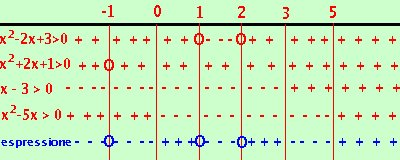

|
risolviamo la disequazione:
x2 + 2x + 1 x - 3 > 0 x2 - 5x > 0
sempre positiva eccetto x = - 1 per cui si annulla x > 3 x < 0 U x > 5  Riporto su un grafico, evidenziando con un piu' dove il fattore e' positivo e con un meno dove e' negativo Dove il valore che annulla e' accettabile lo indico con un cerchietto Nella riga in blu metto il segno dell'espressione quoziente Ora faccio il calcolo dei segni: siccome devo prendere dove l'espressione e' positiva o nulla l'espressione sara' positiva dove il prodotto dei segni di tutti i fattori da' risultato positivoe sara' nulla dove si annullano i fattori del numeratore (i cerchietti) La soluzione e' x = -1 U 0 < x |